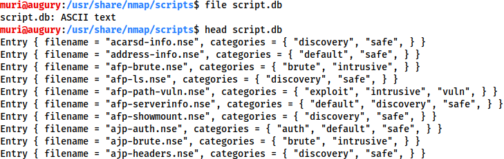
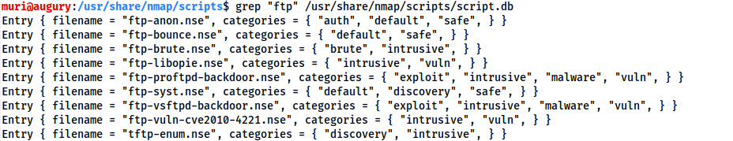
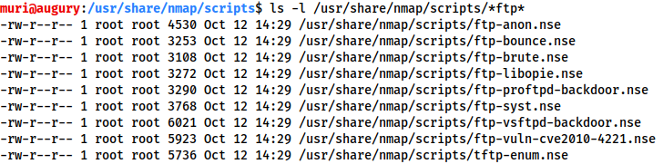
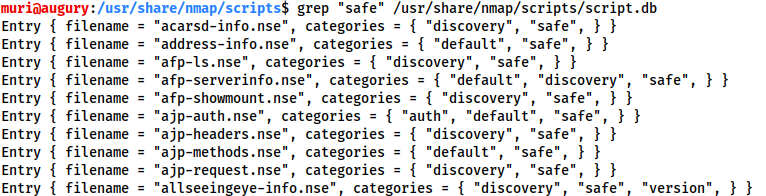

nmap--scripts
The
Nmap
Scripting
Engine (NSE) is an incredibly powerful addition to Nmap, extending its functionality quite considerably. NSE Scripts are written in the
Lua programming language, and can be used to do a variety of things: from scanning for vulnerabilities, to automating exploits for them. The NSE is particularly useful for reconnaisance, however, it is well worth bearing in mind how extensive the script library is.
There are many categories available. Some useful categories include:
•
safe:- Won't affect the target
•
intrusive:- Not safe: likely to affect the target
•
vuln:- Scan for vulnerabilities
•
exploit:- Attempt to exploit a vulnerability
•
auth:- Attempt to bypass authentication for running services (e.g. Log into an FTP server anonymously)
•
brute:- Attempt to bruteforce credentials for running services
•
discovery:- Attempt to query running services for further information about the network (e.g. query an SNMP server).
A more exhaustive list can be found
here.
In Task 3 we looked very briefly at the
--script switch for activating NSE scripts from the
vuln category using
--script=vuln. It should come as no surprise that the other categories work in exactly the same way. If the command
--script=safe is run, then any applicable safe scripts will be run against the target (Note: only scripts which target an active service will be activated).
To run a specific script, we would use
--script=<script-name> , e.g.
--script=http-fileupload-exploiter.
Multiple scripts can be run simultaneously in this fashion by separating them by a comma. For example:
--script=smb-enum-users,smb-enum-shares.
Some scripts require arguments (for example, credentials, if they're exploiting an authenticated vulnerability). These can be given with the
--script-args Nmap switch. An example of this would be with the
http-put script (used to upload files using the PUT method). This takes two arguments: the URL to upload the file to, and the file's location on disk.
For example:
nmap -p 80 --script http-put --script-args http-put.url='/dav/shell.php',http-put.file='./shell.php'Note that the arguments are separated by commas, and connected to the corresponding script with periods (i.e.
<script-name>.<argument>).
A full list of scripts and their corresponding arguments (along with example use cases) can be found
here.
Nmap scripts come with built-in help menus, which can be accessed using
nmap --script-help <script-name>. This tends not to be as extensive as in the link given above, however, it can still be useful when working locally.
Ok, so we know how to use the scripts in Nmap, but we don't yet know how to
find these scripts.
We have two options for this, which should ideally be used in conjunction with each other. The first is the page on the
Nmap website (mentioned in the previous task) which contains a list of all official scripts. The second is the local storage on your attacking machine. Nmap stores its scripts on Linux at
/usr/share/nmap/scripts. All of the NSE scripts are stored in this directory by default -- this is where Nmap looks for scripts when you specify them.
There are two ways to search for installed scripts. One is by using the
/usr/share/nmap/scripts/script.db file. Despite the extension, this isn't actually a database so much as a formatted text file containing filenames and categories for each available script.
 Nmap uses this file to keep track of (and utilise) scripts for the scripting engine; however, we can also
grep through it to look for scripts. For example:
grep "ftp" /usr/share/nmap/scripts/script.db.
The second way to search for scripts is quite simply to use the
ls command. For example, we could get the same results as in the previous screenshot by using
ls -l /usr/share/nmap/scripts/*ftp*:
Note the use of asterisks (
*)
on either side of the search termThe same techniques can also be used to search for categories of script. For example:
grep "safe" /usr/share/nmap/scripts/script.dbInstalling New ScriptsWe mentioned previously that the Nmap website contains a list of scripts, so, what happens if one of these is missing in the
scripts directory locally? A standard
sudo apt update && sudo apt install nmap should fix this; however, it's also possible to install the scripts manually by downloading the script from Nmap (
sudo wget -O /usr/share/nmap/scripts/<script-name>.nse https://svn.nmap.org/nmap/scripts/<script-name>.nse). This must then be followed up with
nmap --script-updatedb, which updates the
script.db file to contain the newly downloaded script.
It's worth noting that you would require the same "updatedb" command if you were to make your own NSE script and add it into Nmap -- a more than manageable task with some basic knowledge of Lua!
{kind=link}
{kind=link}
{kind=link}
{kind=link}